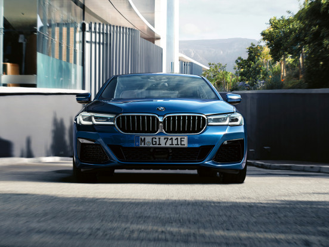
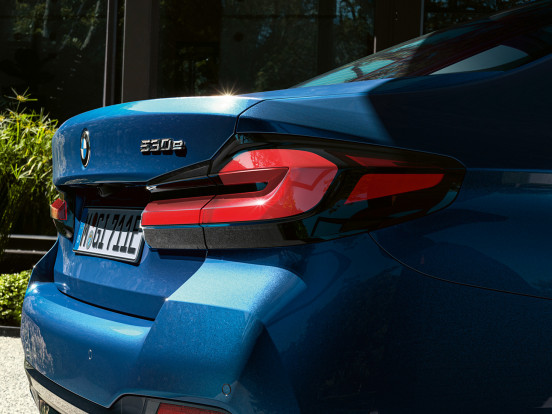

ДИЗАЙН BMW
BMW 5 серии смотрится невероятно элегантно и статусно, чему способствует облик боковой и задней частей кузова. Каждая деталь, включая патрубки выхлопной системы, получившие трапециевидную форму и интегрированные в задний бампер, служит формированию гармоничного, стильного и спортивного образа.

ТЕХНОЛОГИИ BMW
Технологии,воплощены в современных системах помощи водителю и цифровых сервисах. Инновационные и медиа-функции позволяют сохранять связь с миром, получая любую полезную, важную или развлекающую информацию. Движение на высоких скоростях никогда еще не проходило так спокойно и беззаботно.